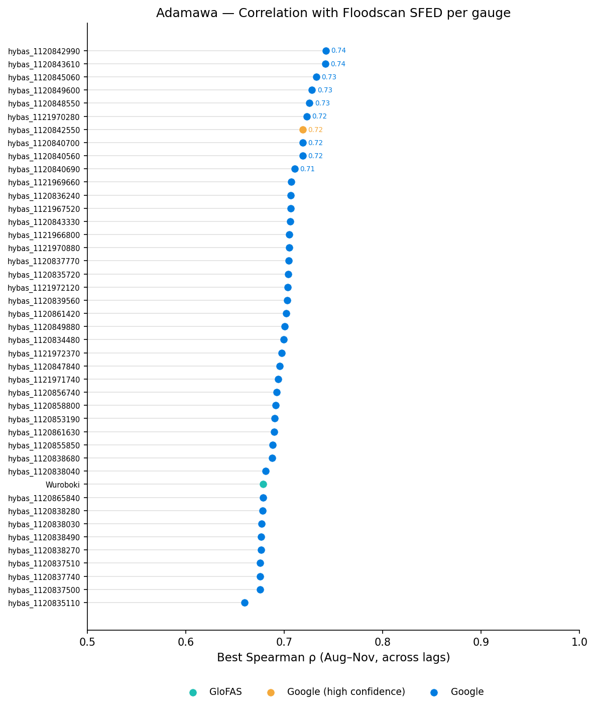
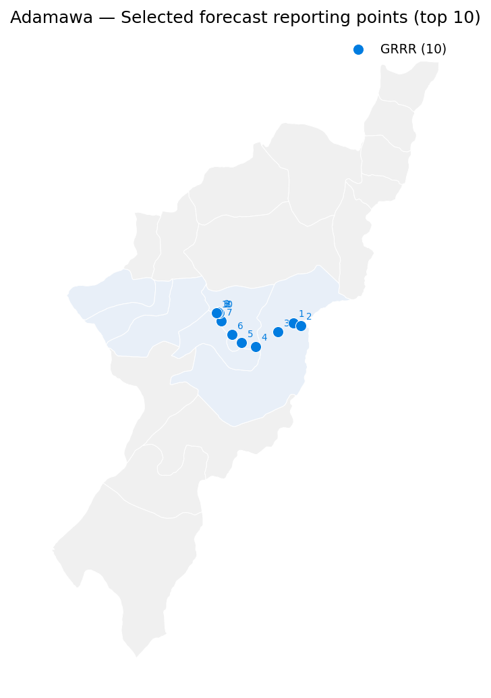
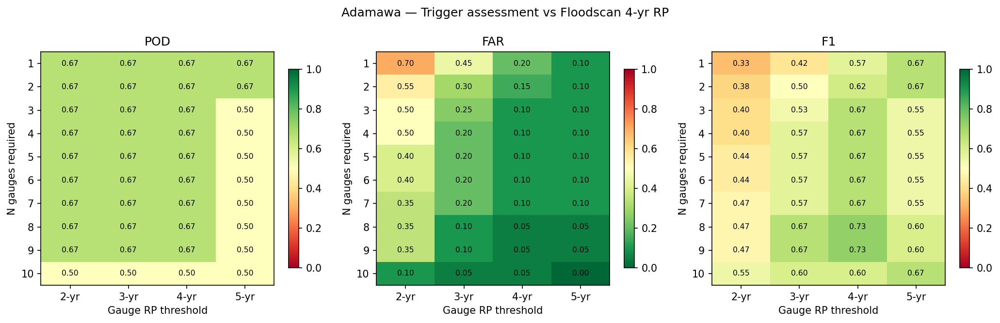
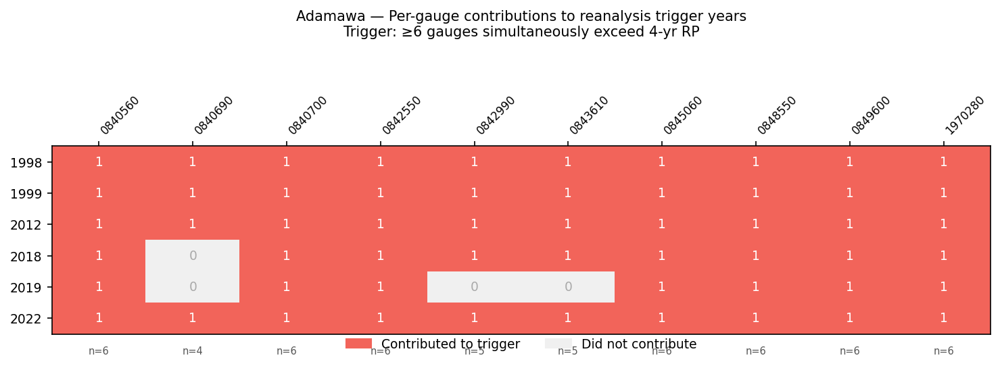
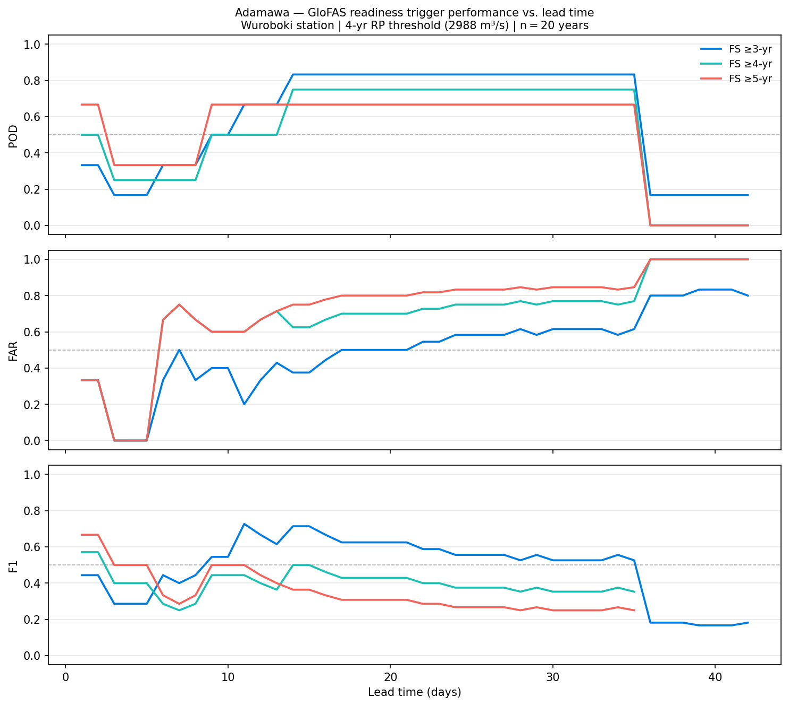

The 2025 Adamawa trigger was a single-station OR trigger: it fired if either GloFAS reanalysis (≥ 3,132 m³/s) or Google GRRR reanalysis (≥ 1,195 m³/s) exceeded its threshold at Wuroboki on any wet-season day. Both thresholds were calibrated to approximately 5.4-year empirical RP and evaluated against Floodscan 5-year RP events.
The 2026 work revisited this design with two goals: to evaluate whether a spatially distributed, multi-gauge action trigger would be more robust than a single-station approach, and to develop an independent GloFAS reforecast readiness trigger that could provide advance warning ahead of the action trigger.
All trigger performance evaluation is grounded in Floodscan SFED (Surface Fraction Exposed to Flooding), aggregated as the daily mean across all pixels within a 10 km buffer of the Benue river in Adamawa state. Wet-season (Aug–Nov) annual maxima from 1998–2023 are ranked using the Weibull plotting position formula (RP = (n+1)/k) to identify flood event years at 3-, 4-, and 5-year return periods.
The 4-year RP is used as the primary design target throughout, giving the following event years: 1999, 2012, 2015, 2018, 2022, 2023 (n = 26, k = 6, RP = 4.5 yr). This targets 5-year RP CERF-level events while calibrating against observed satellite flooding rather than modelled discharge.
Candidate streamflow gauges were identified by spatial intersection: all Google GRRR gauges whose catchment areas overlap the target LGAs in Adamawa state. This yielded 42 GRRR gauges plus the GloFAS reference point at Wuroboki.
Each gauge was scored by the Spearman rank correlation between its wet-season daily streamflow and the Floodscan SFED time series, optimised over a lag range of −7 to +14 days. Correlation was computed on raw daily values to preserve the shared seasonal cycle; annual peak timing was also assessed separately to confirm that highly correlated gauges also peak at the right time of year. GRRR gauges consistently outperformed GloFAS in daily correlation (best ρ ≈ 0.74 vs 0.68), and all top-ranked gauges peak 2–3 days before the Floodscan SFED peak, confirming they carry genuine predictive information.

The top 10 gauges by Spearman ρ were retained from the combined GRRR and GloFAS candidate pool — the selection is purely performance-based with no source-level filtering. In Adamawa, all 10 happen to be GRRR gauges: the GloFAS station at Wuroboki ranked just below the cutoff (ρ ≈ 0.68) against the top GRRR gauges (ρ ≈ 0.71–0.74). Nine of the ten are tightly clustered around 9.3–9.4°N, 12.3–12.9°E on the main Benue channel (best ρ ≈ 0.71–0.74, lag = −3 days). The tenth, hybas_1120840690, is a clear outlier: its 4-year empirical RP threshold is 143 m³/s — roughly 8× lower than the others (~1,100 m³/s) — it peaks 2 days after the Floodscan peak, and it contributed to only 4 of the 6 action trigger years. It likely represents a small tributary rather than the main channel. It was retained in the gauge pool because a single anomalous gauge cannot dominate the ≥60% voting rule, but it warrants attention in any future gauge set review.

A grid search was run over two parameters: the per-gauge return period threshold (2–5 yr) and the minimum number of gauges required to fire simultaneously on the same wet-season day (2–10). For each combination, trigger fire years were counted and scored against Floodscan event years using POD, FPR, and F1.
The selected configuration is: ≥ 6 of 10 gauges simultaneously exceed their individual 4-year empirical Weibull RP threshold on at least one wet-season day. Empirical 4-year thresholds range from 1,101 to 1,117 m³/s across the main-channel gauges (and 143 m³/s for the outlier). The ≥6/10 requirement (60%) balances spatial corroboration against sensitivity: lower fractions pick up isolated gauge noise, higher fractions miss events where flooding is spatially concentrated.

Over the full reanalysis period 1998–2023, the trigger fires in: 1998, 1999, 2012, 2018, 2019, 2022 — giving a combined Weibull RP of 4.5 years (n = 26, k = 6), well-matched to the 4-year RP design target.

The two triggers differ in exactly one year each. The 2025 trigger fires in 2003 (a 3-year Floodscan event, not a 4-year event) but not in 2018. The 2026 trigger fires in 2018 (a genuine 4-year Floodscan event) but not in 2003. This directly reflects the design target shift from 5-year RP (2025) to 4-year RP (2026).
| Benchmark | 2025 POD / FAR / F1 | 2026 POD / FAR / F1 |
|---|---|---|
| 3-yr RP events | 0.67 / 0.00 / 0.80 | 0.67 / 0.00 / 0.80 |
| 4-yr RP events | 0.50 / 0.15 / 0.50 | 0.67 / 0.10 / 0.67 |
| 5-yr RP events | 0.60 / 0.14 / 0.55 | 0.60 / 0.14 / 0.55 |
FAR = FP / (FP + TN). The improvement at the 4-year level is material: POD rises from 0.50 to 0.67 and F1 from 0.50 to 0.67. At 3-year and 5-year benchmarks the triggers perform identically. Both miss 2015 and 2023, which are genuine 4–5-year flood years not captured by either design.
The 2026 design trades the 2025 trigger’s two-model redundancy (GloFAS + GRRR) for spatial redundancy within a single model (10 geographically distributed GRRR gauges). This makes it more robust to local gauge noise but removes GloFAS as an independent cross-check. The GRRR reforecast horizon (≤7 days) is also shorter than GloFAS’s, constraining maximum early warning from the action trigger alone — which is why a separate readiness trigger was developed.
The readiness trigger uses the GloFAS ensemble reforecast at Wuroboki, evaluated over 2003–2022 (n = 20 years). A year fires if the ensemble mean exceeds the discharge threshold at any lead time within the maximum lead time window (Aug–Nov). The discharge threshold is fixed at the 2025 value of 3,132 m³/s (~5-year GloFAS reanalysis RP), which sits above the 4-year reanalysis RP (3,009 m³/s) to reduce false alarms. Two lead time configurations were evaluated:

Option A (3,132 m³/s, LT ≤ 13d) was selected. The +2d lead in 2012 is operationally marginal (GloFAS peaks only 3,142 m³/s at LT=1d, meaning any higher threshold misses 2012 entirely), but Option A is preferable to Option B because it avoids a retroactive trigger in 2012. Both options fail to detect 2018; extending to LT ≤ 16d detects 2018 but adds a new false positive in 2010 and shortens the combined RP to 2.3 years — an unacceptable activation frequency. The GloFAS reforecast appears to have systematically underforecast the 2018 event at short lead times, which cannot be resolved by threshold or lead time adjustment alone.
The readiness trigger fires approximately once every 3 years, compared to the action trigger’s once every 4.5 years. Roughly 4 readiness activations per 20 years will not be followed by an action trigger activation. This frequency is financially acceptable at 5% pre-positioning cost but should be communicated clearly to partners.
This section summarises the 2026 design in the format of the endorsed 2025 AA Framework document, to support updating the PDF.
2025 action trigger (endorsed Aug 2025):
2026 action trigger (revised):
2026 readiness trigger (new — not in 2025 framework):
The action trigger fires if ≥ 6 of the 10 gauges below simultaneously exceed their individual 4-year empirical RP threshold on the same wet-season day. Thresholds were estimated using Weibull plotting positions on wet-season annual maxima, 1998–2023. Gauges are ordered by Spearman ρ (descending); all are GRRR source.
| Gauge ID | Latitude | Longitude | Spearman ρ | 4-yr RP threshold (m³/s) | Trigger years contributed (of 6) |
|---|---|---|---|---|---|
| hybas_1120842990 | 9.39°N | 12.81°E | 0.742 | 1,111 | 5 |
| hybas_1120843610 | 9.37°N | 12.85°E | 0.742 | 1,102 | 5 |
| hybas_1120845060 | 9.33°N | 12.71°E | 0.732 | 1,102 | 6 |
| hybas_1120849600 | 9.24°N | 12.58°E | 0.728 | 1,114 | 6 |
| hybas_1120848550 | 9.26°N | 12.49°E | 0.726 | 1,106 | 6 |
| hybas_1121970280 | 9.31°N | 12.44°E | 0.723 | 1,110 | 6 |
| hybas_1120842550 (Kangli) | 9.39°N | 12.37°E | 0.719 | 1,114 | 6 |
| hybas_1120840700 | 9.44°N | 12.36°E | 0.719 | 1,113 | 6 |
| hybas_1120840560 | 9.45°N | 12.35°E | 0.719 | 1,117 | 6 |
| hybas_1120840690 (outlier — small tributary) | 9.44°N | 12.34°E | 0.711 | 143 | 4 |
hybas_1120840690 has a substantially lower threshold (143 m³/s vs ~1,100 m³/s for the main-channel gauges) and contributed to only 4 of 6 trigger years. It is retained in the pool because a single anomalous gauge cannot dominate the ≥6/10 voting rule.
| 2025 (endorsed) | 2026 (revised) | |
|---|---|---|
| Return period | 4.5 years | 4.5 years |
| Annual activation probability | 22% | 22% |
| Years activated (reanalysis, 1998–2023) | 1998, 1999, 2003, 2012, 2019, 2022 | 1998, 1999, 2012, 2018, 2019, 2022 |
| Historical lead time (action) | 14–25 days | ≤ 7 days (GRRR reforecast horizon) |
| Readiness trigger RP | — | ~3 years |
| Readiness trigger years (2003–2022) | — | 2003, 2008, 2012, 2014, 2016, 2019, 2022 |
| Readiness trigger lead time to action | — | up to 13 days |
Action trigger performance against Floodscan SFED annual maxima, 1998–2023 (n = 26 years). FAR = FP / (FP + TN).
| Trigger | Benchmark | Accuracy | Detection rate | FAR | Precision | F1 |
|---|---|---|---|---|---|---|
| 2025 (endorsed) | 3-yr RP | 88% | 67% | 18%† | 100% | 80% |
| 2025 (endorsed) | 4-yr RP | 77%† | 50%† | 15%† | 50%† | 50%† |
| 2025 (endorsed) | 5-yr RP | 81% | 60% | 10%† | 50% | 55% |
| 2026 | 3-yr RP | 88% | 67% | 0% | 100% | 80% |
| 2026 | 4-yr RP | 85% | 67% | 10% | 67% | 67% |
| 2026 | 5-yr RP | 81% | 60% | 14% | 50% | 55% |
† 2025 figures at 3-yr and 5-yr RP are taken from the endorsed framework PDF and reflect a different evaluation period. The 2025 4-yr row is computed here using the same 1998–2023 evaluation period as the 2026 rows for direct comparability.
Event year sets (Weibull, n = 26): 3-yr RP → {1998, 1999, 2003, 2012, 2015, 2018, 2019, 2022, 2023}; 4-yr RP → {1999, 2012, 2015, 2018, 2022, 2023}; 5-yr RP → {1999, 2012, 2015, 2022, 2023}.
Readiness trigger configuration: GloFAS ensemble mean > 3,132 m³/s at Wuroboki (G5004), lead time ≤ 13 days. Evaluated over 2003–2022 (n = 20 complete reforecast years), benchmarked against the 2026 action trigger fire years within that window: {2012, 2018, 2019, 2022}.
| Metric | Value |
|---|---|
| Evaluation period | 2003–2022 (n = 20 years) |
| Benchmark | 2026 action trigger years in window: {2012, 2018, 2019, 2022} |
| TP — readiness fires, action fires | 3 (2012, 2019, 2022) |
| FP — readiness fires, no action | 4 (2003, 2008, 2014, 2016) |
| FN — readiness misses, action fires | 1 (2018) |
| TN — neither fires | 12 |
| Detection rate (POD) | 75% |
| False alarm rate (FAR = FP / FP+TN) | 25% |
| Precision | 43% |
| F1 | 55% |
| Activation return period | ~3 years |
Lead time from readiness to action trigger in confirmed TP years:
| Year | Lead time |
|---|---|
| 2012 | +2 days |
| 2019 | +46 days |
| 2022 | +13 days |
The 2019 lead of 46 days reflects an unusually early GloFAS signal rather than a reliable early warning; the operationally expected advance notice is 2–13 days. The 2018 miss cannot be resolved by threshold or lead time adjustment — the GloFAS ensemble systematically underforecast the 2018 event at all short lead times.
The 2026 action trigger replaces the 2025 dual-model OR design (GloFAS at Wuroboki OR GRRR at Kangli) with a spatially distributed consensus condition within a single model: at least 6 of 10 upstream GRRR gauges must simultaneously exceed their individual 4-year empirical RP threshold. This corrects the main weakness of the 2025 design: the 2025 trigger missed the 2018 Floodscan event (a genuine ≥4-year flood year) while firing in 2003 (a 3-year event below the intended design threshold). The 2026 trigger fires in 2018 and not in 2003, improving F1 at the 4-year benchmark from 0.50 to 0.67. The trigger’s overall return period (4.5 years) and activation frequency (22%) are unchanged.
A new readiness trigger is introduced — absent from the 2025 framework — using the GloFAS ensemble reforecast at Wuroboki (> 3,132 m³/s, lead time ≤ 13 days). It fires approximately every 3 years and detected 3 of 4 action trigger years in the 2003–2022 evaluation window at lead times of 2–13 days, enabling pre-positioning decisions ahead of the GRRR-based action trigger. The 2025 GloFAS component — which used reanalysis, not reforecast, and had no explicit lead time requirement — was not suitable as a readiness trigger in the operational sense; the 2026 design makes this preparedness function explicit and independently evaluable.
GloFAS reanalysis as a supplementary readiness component was evaluated and not recommended. Adding a condition that fires if the GloFAS ERA5 reanalysis exceeds 3,132 m³/s (as a near-real-time nowcast proxy) produces no additional event detections within the 2003–2022 evaluation window — the reanalysis only adds 2022 and 2003, both already captured by the reforecast component — and provides only a 2-day earlier signal in 2022. Its main theoretical value is as a safety net for years where the reforecast fails, but realising this benefit would require a reliable near-real-time GloFAS data feed that is not currently operational in this workflow.
2015 and 2023 remain unexplained misses. Both are genuine 4–5-year Floodscan events that neither trigger configuration detects. Whether this reflects a different flood pathway (e.g. Lagdo dam release timing, upper Benue vs tributary contributions), gaps in GRRR gauge coverage for those years, or a model deficiency is not yet determined. Investigating these years is a priority before operational deployment.
Benue state trigger thresholds were not finalised.
Notebooks 05_trigger_assessment.ipynb and
06_trigger_definition.ipynb are ready to run with
STATE = "Benue", but the optimal RP threshold and gauge
count for Makurdi remain unconfirmed in STATE_CONFIG. The
same workflow applies directly to Benue once these values are
calibrated.